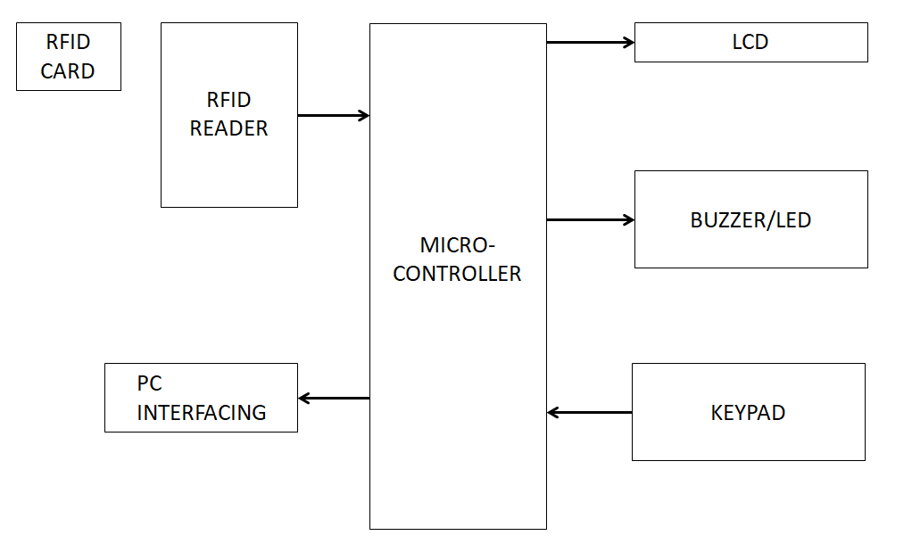

Database Architecture

Each user, student, will have an RFID card in this system. A RFID reader will be installed on the company's entrance or entry gate, as well as the door to the classroom or school.
Employees must show their RFID card to the reader whenever they wish to enter the office. He or she must bring the RFID card quite close to the RFID reader. The RFID reader will then record the
RFID card number as well as the time the employee or student logged in. Similarly, when departing, the employee/student must display the card. As a result, the exit time will be recorded.